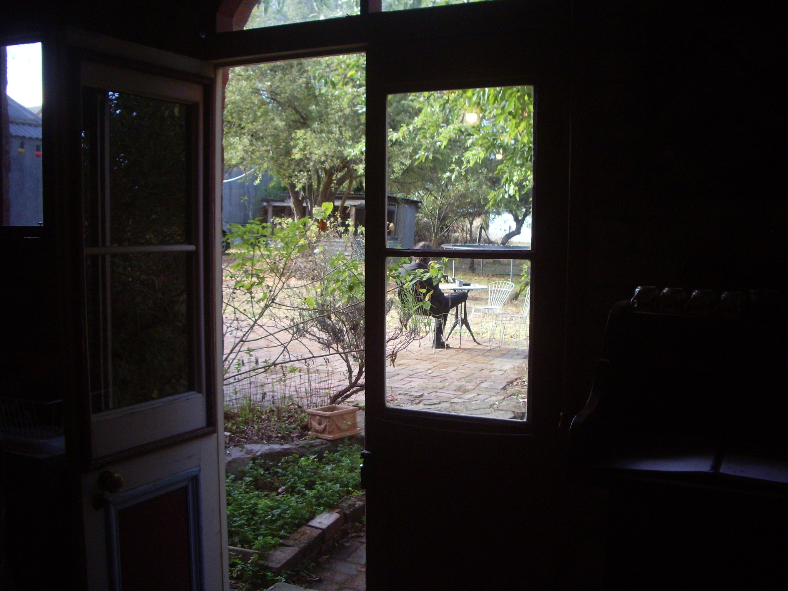
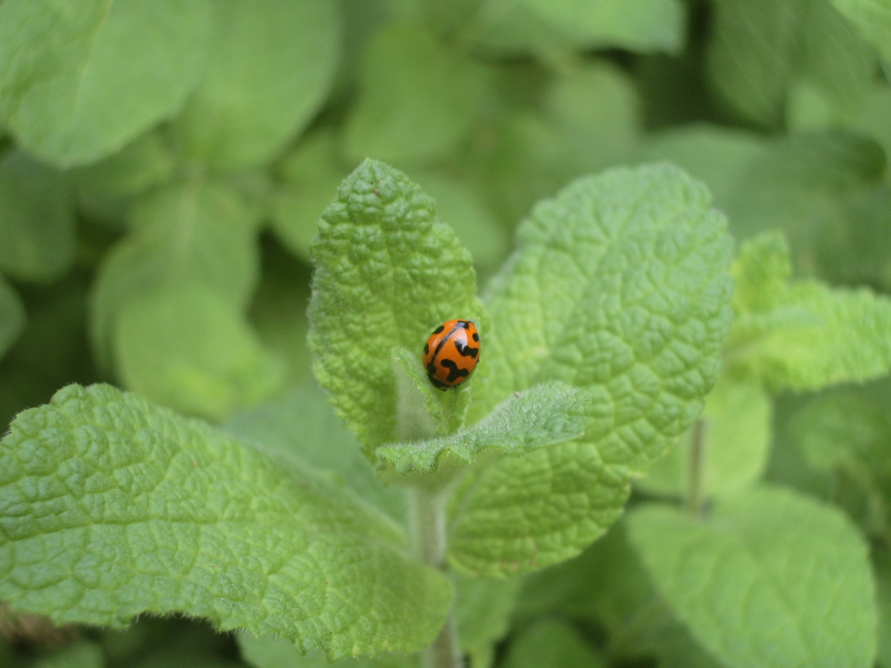
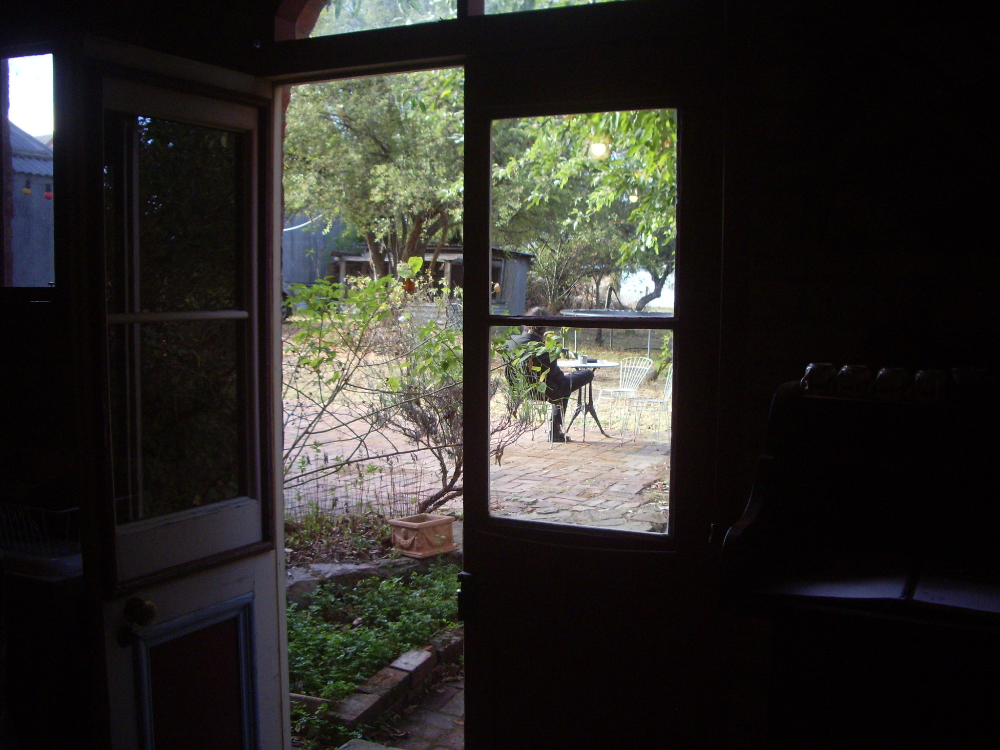
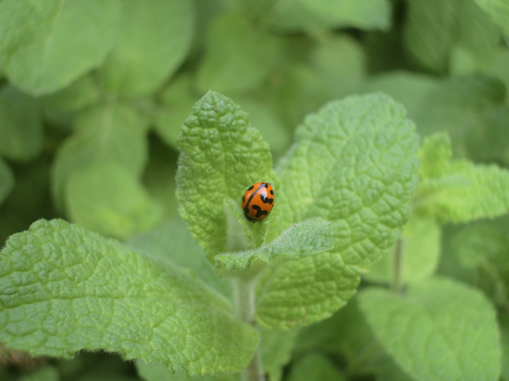
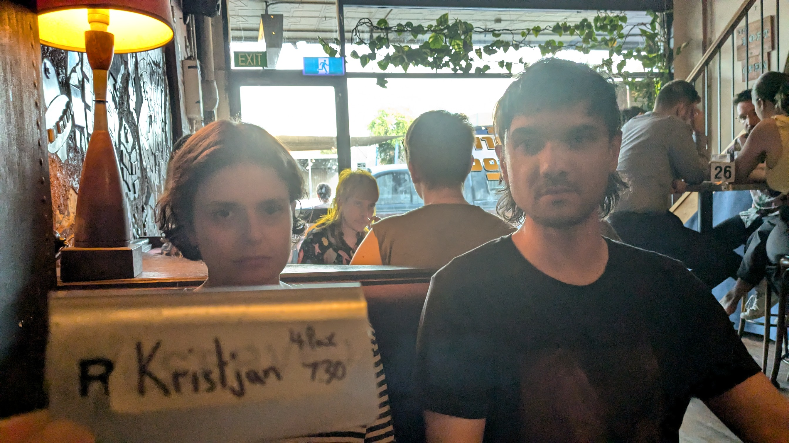
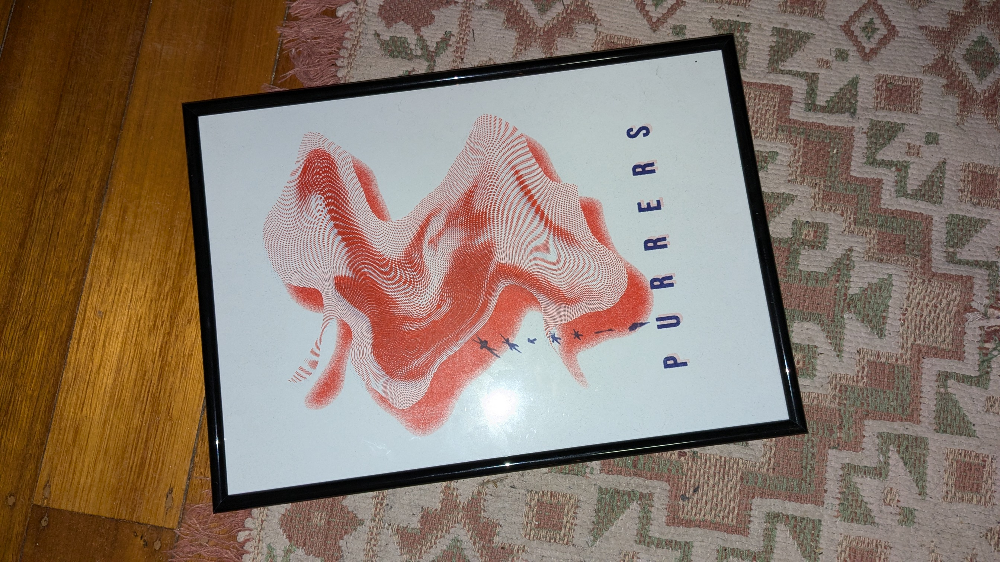
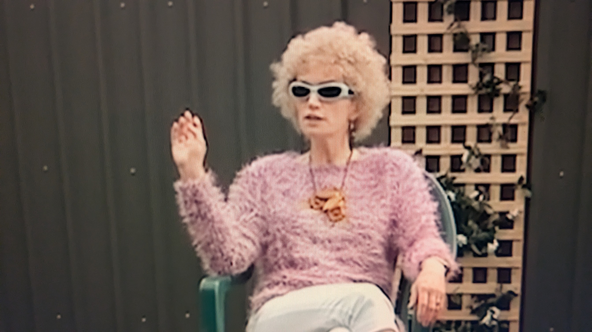
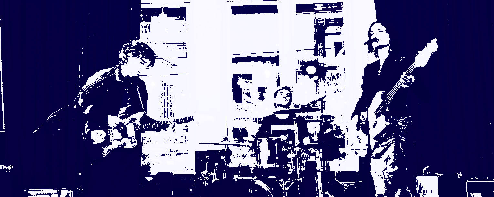

blog
________________________________________________________________
11/04/2025
hi hates - punctum icu
with Anthony Pateras, Silvia Tarozzi, Deborah Walker, and Alexander Garsden
25/03/2025

ᓚᘏᗢ
23/03/2025
M'S CHAI REVIEWS/Goodbye Preston
Aldi Organic Chai
Well I never got around to reviewing the Chai Latte from Contraband at Preston Market because my apartment building burned down and was deemed uninhabitable by Darebin City Council and the Victorian Fire Department. I still don't really know what happened (and likely never will), but apparently a candle flame made contact with a bed somewhere on the top floor.

Any way, now I live in Maribyrnong. I am simultaneously very close to, and repelled by, Highpoint Shopping Centre. There is a small mall called Milleara sorta close by, which is where I've been shopping lately. I am yet to find a shop there that sells a nice loose leaf chai, so I've just been buying the Aldi teabags.
Flavour: It's bitter, but not bad once I've added milk and a bit of sugar 3/5
Price: I can't remember how much it costs. I wonder if I can google it. Ok so according to google the black tea in the same size (50 bags) costs $2.99. Assuming the chai is around the same price, thats pretty good. 4.5/5
Experience: Milleara Shopping Centre is a bit like Northcote Plaza; built long ago and never renovated, it's a boring old time-warp of a place. I don't like going there but I don't want to go to Highpoint. 2/5
Next review: Somewhere in Highpont
ᓚᘏᗢ
17-20 march (sound recordings scroll container)


 



15?03/2025
spit @ practice
13/03/2025
"When every song is epic, none of them will be"
- Syndrome
"letting them (pedals) distract you from the song writing itself is definitely detrimental"
- lindsey jordan
10/03/2025
nick gives us keys to the city
06/03/2025
memorable sets feb-march
CS + kreme, john.t.gast, silzedrek, who cares?, the motifs, the cats miaow, reality winner, joynt venture, bad loo tenant, only skin, frankenstock.
01/03/2025


23/02/2025
♫⋆｡♪
15/02/2025
catalogue - julie
recent obsession turned merch table purchases, the band impresses in every way. Their signing with warner music must have something to do with the fairytale sequence of events starting with mysterious sponsored instagram posts - to - 'you will like them' verbal recomendations - to - purchases at the merch table$$$.
They sounded so good together, mix conspiracy/rant incoming - as the show went on the live mix got more and more 'commercial'. The gig started with the band slamming into the PA, using the sound system itself to do some mixing, then after a while every few songs you could hear more and more compression. By the end of the show the drum overheads were about half of the PA.
I thought it was a real shame. painted a picture in my mind that the band had sorted something at soundcheck and we were all being shortchanged by the end of the show.
At some point people started yelling at keyan (guitar) to drink, and alex (bass) used the pitch bend on the sample playing to curve the situation.
can't listen to studio stuff after hearing their live sets on youtube - irl was a treat.
suziescribbles REVIEW here09/02/2024

voodoo1 + killkill filter sold, sampler + panner + bowery electric vibes bought
boss pn-2 prices are annoying
05/02/2024
sampler #1.
noage uses one into an amp and another into a PA. maybe another stereo sampler is written in the stars..
01/02/2025
noodles and mtg in flemington, 2/3rds to @rest_in_spit with alternate front-person jon aka cuddle
31/01/2025
red hill hotel / cat book
21/01/2025
sandown clowns
pre pub trivia
didnt win the music round, or any other round.
13/01/2025


poster by ainslea
@bingo_print_shop
online store
24/30/2024
roll call
24/12/2024
december pics


20/12/2024
website update
ᓚᘏᗢ
11/12/2024
unsolicited SCattered bodies demo
'SOLEA'
on the lookout for some jamman / pad samplers.
ᓚᘏᗢ
30/11/2024
@rest_in_spit
spit is loud.
Very cool night. Just dumplings from "Dumplings and More". Thanks for having us nick, max, asha, jax, sam and bubblegum haircut.
Got carried away chatting to an old firend, only seem to manage one recording a night at best.

ᓚᘏᗢ
20/11/2024
Xx0535, xx0213
330030, 110010, 330030, 110010
555300, x33010, x55360, x33030 or og 555030
332000, 332000
333200, 333200
550050, 880080, 880090, 330030,
050030, 030010
660060, 770070
660060, 770070
standard tuning
demo
ᓚᘏᗢ
17/11/2024
"(purrers) the only real shoegaze band in melbourne"
Tom - Oceans/BerlinTourist/SwanDry
ᓚᘏᗢ
14/11/2024
Sonorous X - MESS @ MRC
Ai generated vocal howling summoned from a wall of modular synth felt demonic and unnerving. Atmospheric. The matrix will be real?.
Dark battery pods underground.
edit: YOU tube LINK SonorousX: MESS @ MRC
About the event
A liberation of sonics from the shackles of stereo (( ͡° ͜ʖ ͡°), Sonorous welcomes listeners to go beyond a traditional listening experience into an expanded universe of sound.
Reaching a landmark tenth instalment in its Sonorous series, MESS invites Lauren Squire and Joel Stern to engage with the limitless possibilities of the MESS collection.
Commissioned to create an immersive multichannel electroacoustic performance, these two extraordinary artists push their work to new directions through the experimentation and manipulation of spatial sound across multiple channels.
Join us as they demonstrate the unrealised potential of sound and diffuse their brand-new works in glorious, octaphonic surround at the Primrose Potter Salon.
09/11/2024
Gig with yeevs @ old bar. Got there late, started the set without being ready (directly from an uber), gear probems, D essentially had a meltdown, noone could hear anything.
The banh mi for lunch, Ca Com in richmond, the reason for being late. Was amazing, not even crispy pork, some kind of spicy/curry chicken.
sorry yeevs, sounded great, very dynamic, nice people.
ᓚᘏᗢ
02/11/2024
@rest_in_spit
Mercy Please & Faun Haus @ Spit, both prophetic and intense.
Mercy Please moseyed up to the stage, singers taking their time removing shoes and socks. A blend/balance, masc and fem, fun and serious, groovy and edgy.
seamless set put together with loving/ delayed sound bites that lead into more moments of yin and yang. Hopeful lyrics, some empty, passionate, softly warped love notes, bitter/dry vocal counterparts.
Scary and distant but, equally friendly and inviting. Plenty of dancing, plenty of nodding.
Trumpets, one of those sampler - mixer - drum machine - workstations, delays. After listening back to the set on the way to work; i kept imagining alternative early 2000's nike ads.
Faun Haus (faunhaus)) also shared some duality of their own. young but old head. poetic but angry. The singer holding his notebook to reference when he came back from his engrossed preaching.
I was chatting a bit too much to uplaod the whole set and havent tried to find a song i didnt ruin with my yapping.
One of Faun hauses songs was a memorable full spectrum noise jam.
A member giving up the bass to operate some kind of TV/Radio?/equipment making different scratchy, peircing, fuzzy sounds. conveying their conviction, the song went on for at least 6 minutes.
Someone in the audience was swaying about, goading the singer. Enevitably, posessed on a trip around the room, the friction finally caused a spark. A chorus bookmarked with a bit of physicality. The guitarist was very tasful adding lines on top of it all.
Bassist keeping riffs circulating underneath. With someone manning (drinking at) the drum machine and its appendages, adding more noise and delay whenever things got too straight.
Found out after the show that Ann Marie (annemarrie.com.au))was instigating this aggresion. Was assured all above board.
Spoke to Nick from Spit (venue well worth checking out)(Thnx Jax). Got the heads up about a shoegaze festival they'll be doing next year.
@rest_in_spit@rest_in_spit@rest_in_spit
ᓚᘏᗢ
12/10/2024
Red Hill Hotel - Bob Log iii

This is going to be a very tough gig to beat. Thanks Jax, Alex, Pablo, Bob, Bonnie etc..
Wouldn't have been possible without Ainslea.
Shots courtesy of J.
Maybe the first time we've had an audience completely un-enthused. No applause/talking even, just a lengthy silence. Finally broken by the return of Ringo Deathstar over the house PA (this song)
Bob found us and said he was taken straight back to the band Opal A quick history lesson and we realised that was as nice as compliments come.
One audience member had a lot of constructive critisism. No hooks, no solos, no breaks. All fullfilling band ideologies instated from the beginning.
Grateful to get a reaction, maybe the only paying attendee to 'enjoy' the set.
Bob's playing was really impressive, relentless lashings of fiery banjo licks (at speed), while coordinating foot triggers, drum machines, kickS and a snare.
"Theres two kind of people here tonight. Those that will drink champagne out of the rubber duck. And those that wont." Bob Log iii.
Bob cleaning the rubber duck post show.

chewton
Chewton is very chill, very pretty, Castlemaine as well.
Everyone should make the trip up there sometime.
ᓚᘏᗢ
04/10/2024
Human Intrusion @ Nighthawksbar.
The duo sounding very moody and very dancy.
Knowing people who constitutionally chuckle while also feeling depressed, this seemingly opposed coexistance was natural enough.
The guitar players rack case was radiating light from all of the effects.
Overheard someone sharing, that his face is just usually that disinterested, "dont worry".
The singer / bassist in contrast couldn't stay still if they tried. Grooving to the heavy drum machine that filled the room.
more youtube links below:
ᓚᘏᗢ
30/09/2024
update
Channeling groove armada or 90's/00's dnb jungle videogame bass; the bossa nova beat no longer cuttingit.
ᓚᘏᗢ
24/09/2024
smug faces after winning the music round @ pub trivia.
Shout out to A - unseen, an integral part of the team.

Same day visit to swopshop for a vocal delay.
Digitech Echo Plus was described as 'the sound of shoegaze'. It sounded great for vocals and guitar. The digital repeats dark and melted.
When playing high notes on the guitar, the delay gives a twinkle that is very dream pop.
Singing requires the pedal to be close to its shortest delay time, but with the feedback on 10, and the mix at 8.
New demo.:
♫⋆
ᓚᘏᗢ
02/09/2024
Mel drinks x9 Chai Lattes today.
New tune brought to you by chai number nine. Bedroom chords below, originally made without any chai.
Krist, planning a bossa nova beat, might be appropriating a specific Radiohead song. Mel is working out the bass and writing lyrics. Imagine being inside the mbv drums sucked through a worm hole.
ᓚᘏᗢ
26/08/2024
Jack says he sees us more than his mum
❤
3phase rehearsals
ᓚᘏᗢ
25/08/2024
M'S CHAI REVIEWS
Melbourne Polytechnic Cafeteria Chai Latte

In my last review I said my next review would be for New Day Rising. Welp, I lied. This chai latte is comin' at ya from Melbourne Polytechnic's Preston campus (at which I am currently studying a Diploma of Business)
Flavour: I asked them if it was vegan and they said yes but I swear I can taste honey? It could be a honey subsitute but whatever it is I can't say I love it. 2/5.
Price: A small size, with the keep cup discount is $4.20. (lol) I reckon this is pretty good 4/5
Experience: No one hangs around in the seating area, so if you only look at that part of the cafeteria, it's kinda like a liminal space, which I dig. 3/5
Next review: Contraband at Preston Market.
ᓚᘏᗢ
22/08/2024
In a week of tax returns, payment plans, and gear consignments, purrers secures an investment in rock and roll manifest.
A Marshall 4212 combo now joins its twin - Marshall 5312 reverb twin - in the back of the ford focus. 2004's TopGear Car of the Year.

Gig at the evelyn with SelectAll and Parasite.
SelectAll - Taylor plays(no more) in Milk Punch with Kris and Raf, NuGaze with pop-punk. A residency they were doing at the evelyn. Cuddle had played the week before. Thanks for having us on.
A very kindly took some photos for us on the night.
The quality after downloading, uploading, and downloading was so bad though, the last step became an impromptu hour of runaway "design".
Setlist included for diehard fans only. Fairytal3 was endorsed later outside by Milly.
ᓚᘏᗢ
17/08/2024
Garage Sale + Local Authority @ the Bergy Bandroom.
I'd bought a Garage Sale CD sometime ago, which still hasent arrived yet @sore.horse.
For no reason it also took a long time to catch a show, this might have exagerated expectations to see them for real, but the band delivered. Quiet loud, noisy, delicate, slow core from recent american yesteryear. Without being too reductive.
They rock.
I reference america because, after one of the many long applauses, the band seemed basically suprised, saying they didn't know people here were into this kind of music (something to that effect). As if the internet didn't exist. And 90's emo isn't the trendiest thing right now.
That just came off as endearing, because, they rock.
Bought a Local Authority vinyl, I remember Raf saying they're more slowdive / alt rock. I can't remember specifics, this being typed up weeks later. 4 piece and were very impressive, songs sounded finished, polished, album for sale, merch, interstate travel. All leaving a great impression
Kris managed to plug us / force them to write our name in their phone. Hoping we get to play the show with them next time hehe.
ᓚᘏᗢ
25/07/24
Kim Gordon (The Collective Tour) - Live @ Northcote Theatre
phone recording from deep within a jacket pocket
LINK❤
13/07/2024
.jpg)
gig at oldbar with general goods and goodwin.band on a call / prayer / tuesday.
Lovely to meet both bands!
Also cool to be on the same board as Body Maintenance (IG) a real inspiration.
That gig with Screensaver Music was a goodie.
.jpg)
graffito out the back. really clever integration of two classics.
ᓚᘏᗢ
16/06/2024
"It's called culture you swines"


Preston Symphony Orchestra: Dancing Across Continents
Moncayo - Huapango
Villa Lobos - Bachianas Brasileiras No.4
Conductor: Carlos del Cueto
phone recording
->here<-
ᓚᘏᗢ
13/06/2024
The day after we played at the Penny Black, we played at the Last Chance Rock and Roll Bar. I am writing about it now, nearly two weeks later, because I am bored.
Some funny things that happened: 1. Our set time was 4.20
2. The band we played with, Drenched, were from Tasmania!! Well i'll be...I thought Tasmania was just a myth.
3. We all ordered burgers from the Last Chance kitchen after the show. Mine was a Hawaiian burger (it had a slice of pineapple in it and was delicious!) Dave struggled with his burger, im not sure why but I think it may have been due to jetlag. I believe Kris' burger was called The Big Kahuna
Our next show is at the Gem Bar on the 15th June with Tam Vantage
ᓚᘏᗢ
31/05/2024
Playing at the PennyBlack with Sorry, Dave and SAN. A very kind man said the show was urethral.
Phone pic turned 00's - sticker pack - punk - emo - core, courtesy of A.ᓚᘏᗢ
01/05/2024
M'S CHAI REVIEWS
Original Fruit and Nut Chai Tea

This tea comes from a wonderful little stall at the Preston Market called Original Fruit and Nut. As the name suggests, they sell dried fruits and nuts (and so much more!) by the kilo.
Flavour: This is my go-to tea for home drinking. I have four cups of it every day! In the mix, there are visible bits of cinnamon sticks, cloves, star anise, and other stuff I don't recognise but I'm sure is good stuff. A delight for the senses. 5/5
Price: $7.99 for a 200g packet. Look honestly I don't know much about economics and generally believe that almost everything is overpriced. 3/5
Experience: I find Preston Market a bit hectic. I've been going there every Saturday for the past year or so and still get disorented. Maybe that's just me though. 3/5
Next review: I'm thinking New Day Rising.
ᓚᘏᗢ
21/04/2024
r.i.p our elk fsb-45 combo amp
Recording with the volume up, capacitors failed and the elk died. Even the recently replaced speaker was lost.
"Prohibitively expensive" T. Lovell.
My shoe (above) captured in an un-related swopshop ad while buying a slightly less geriatric replacement amp.
ᓚᘏᗢ
07/04/2024
gig at Mamma Chen's. Hungrily, we chose to commit to eating at an under-staffed pizza place across town. We missed Mayzie play and were late to set-up.
Ambur naarm's drummer was also in a hurry, trying to pack up mid-song in an effort to get back to geelong at a reasonable hour.
The band pleaded for one more, it was funny to watch them packing up their cymbals again while the others played the final outro.
Vital Sparks played very well, and sounded great. Another moment of professional envy. I do believe all saxophones should be replaced with cooler guitars.
Thanks again Mayzie, check out her latest efforts ->peter - you, sad we missed that one.
Salt Tapes iii from Cerine Ruby->HERE<- & ^^^
ᓚᘏᗢ
01/04/2024
NSC w/ Noisy Neighbours, Thanks for the video R!
Instagram->HERE<-
Although not feeling great about our first couple of shows making it online.
ᓚᘏᗢ
31/03/2024
♫⋆until the end - threephase
Kris has linked 3x private soundcloud tracks in the last couple of years. One of which we've learnt and practice sometimes.
ᓚᘏᗢ
23/03/2024

might not work out
ᓚᘏᗢ
14/03/2024
M'S CHAI REVIEWS
Three Phase Soy Chai Latte

Let me start the review by saying that Three Phase Studios is where we normally rehearse and the fact that they have a proper bar/cafe on site is probably one of the reasons we rehearse there.
Saves us having to go up the road for a drink or snack.
Flavour: decent chai, I'll give it 4/5
Price: $5.60 for a mug or $4.60 for a cup. It's competitive I suppose 3/5
Experience: Depends who's making it. The barista will usually be either J or T (don't wanna mention any names!!) J is maybe a little ham-fisted with the steaming wand and introduces too much air, so it ends up being about half a mug of foam.
T's are good though and everyone who works there is so lovely I'll just say 4/5
Next review: Dunno, hardly anywhere has a vegan chai blend :(
ᓚᘏᗢ
03/03/2024
The Bergy Seltzer; familiar faces from RMIT's Sound Production course -> Thomasin <- dreamy folk 3-piece, soft-rock with hard strumming? Eli (bass) had even attended a class without being a student..
With just one drive pedal, some parts of the set sounded very shoegazey using an acoustic guitar into a fender DRRI.
The sound person was not sharing any enthusiasm to use 3x guitar amps that night, but did share their liking for Cameron's aluminium Pearl snare.
We played two new instrumental songs and Kris beat Mel in an exponentially exciting game of chess after the show.
ᓚᘏᗢ
02/02/2024

studio time
ᓚᘏᗢ
23/01/24
We had our gig at Bar Open a few days ago. Here are some things that happened:
-The person who filmed us at Old Bar and uploaded the footage to Youtube was there again, filming and uploading! ♫⋆
-I made a joke about how Bar Open was one of the first places I went to when I turned 18..two years ago. I thought this was pretty funny but nobody else did :( (except Kris)
-There's a big old mirror mounted on the roof above the stage and it was fun watching the tops of the other bands' heads while they were playing.
Speaking of the other bands, thank you so much to Oceans for having us and Kudos to Ally Mac for having such a lovely country-esque sound!
Our next show is at the Bergy front bar on the 29th Feb. (wow it's a leap year)
ᓚᘏᗢ

14/01/2024
The next gig turned out to be at Old Bar and not Bar Open.
Town Ace ♫⋆ were on first and minus a guitarist. Having never heard them before, by the end of the show you questioned the need for lead.
Their chords and guitar sounds came across as intelligent but also casual, like Trevor Wong(?) but in a cool band, more for the discerning - slacker - everyman.
Noticeably, everyone could play. Silver Jews cover. Came away with a cassette;
Kiss Heaps ♫⋆ were a duo that drew you in with non-threatening fluffy natural fibers.
A duo that draws you in with non-threatening fluffy natural fibres.
An eerie vulnerable world building singer songwriter, paired with friend and emotional craftsman.
Together creating a set built on droning melancholic atmospheres.
The guitarist/singer was prone to slowly twisting up, contorting himself, physically affected by their music, delivering tunes between id and ego. While the craftsman hunkered down, moving between their mess of instruments on the stage floor, always keeping busy.
The kind of set you stumble across on youtube at midnight and hunker down with.
Wondering how they looped(?)/sampled(?) A static, crackly accompaniment at times, we later learned it was simply a bad guitar cable.
Purrers, D, being told to turn down 4 times by the 3rd song. Made worse by the fact the set made it to youtube (if your in this deep: please forgive and forget ♫⋆).
Vowes to connect to rehearsal/bedroom energy - colour code - live sound communication - etc.
Cold Regards -FB- were a match up that worked. Constantly tasteful guitar licks - the cool kind. Casio rhythms and reverb heavy keys. I really enjoyed when things got dark and droney.
The Casio keyboard transformed and thoughts of any potential twee 80's indie paisley jangle were gone. Left thinking about JAMC and turning up the PA.
ᓚᘏᗢ
09/01/2024
M'S CHAI REVIEWS
Origin Chai

I bought this sticky chai from the supermarket (woolworth's). The stickiness comes from coconut nectar, making it vegan. I appreciate that. I liked the aroma and the flavour was pretty much spot on. Bit expensive though.
Flavour: spicy and fruity. I'll give it a 4/5
Price: It's a small packet (100g or 8 serves) and it cost 9 dollars. That's more than a dollar per serve! At the rate I drink chai it won't last me a week. 2/5
Experience: Well, I didn't have to talk to anyone to get this chai and I do enjoy the process of brewing it myself. 4/5
Next review: Three Phase chai
ᓚᘏᗢ
20/11/2023
♫⋆demo - d#gdgbd
X05300, x05550
400000, 004000, 005000, 002000
ᓚᘏᗢ
18/11/2023
Our show at Cafe Gummo was last night and we all had so much fun. We even got some very nice feedback from some of the punters who weren't our friends! (but they are now) One person said "you're the best shoegaze band in Melbourne." Nice!
Some funny things that happened:
- -The door handle for the green room door was missing so if we wanted to open it we had to stick a spoon in the hole where there should have been a handle and twist the spoon around a little bit
- -I just straight up forgot how to play some of the songs. Oops!
- -We got burgers from Kustom Burgers and while they were delicious they were kinda sloppy so more of the filling fell out than stayed in.
Thank you so much Cafe Gummo for having us. Our next gig is Jan 19th next year with Oceans at BAR OPEN DEFINITELY BAR OPEN THE ONE ON BRUNSWICK ST
(I've definitely been telling people it's at Old Bar; I'm always getting the two of them confused!)
ᓚᘏᗢ
10/11/2023
♫⋆demo - d#gdgbd
X05477, X03255, X05477, X03255
879000, 099070, 099080, 055700
X05470, 033500, X05470, 033500
X33010, x1010080, x55030
X88060, x33010, x1010080
ᓚᘏᗢ
08/11/2023
We played our very first show 4 days ago! If you missed this historic event here are some funny things that happened:
- Mope Burn played her DJ set before all the bands. (Everyone thought this was weird except her)
- Kris put some foam thingies called "Booty Shakers" over the feet of his floor tom, I guess to stop it from moving around??
- The engineer turned Dave's guitar amp volume down and then Dave just went and turned it right back up. This happened so many times it ended up being like an epic duel between Dave and the engineer. Who won? I dunno.
Seriously though thanks so much to Brunswick Artists' Bar for having us and Morphemme for playing with us. They are a hard act to follow!!
Our next show is at Cafe Gummo in Thornbury on the 17th November this year
ᓚᘏᗢ
03/11/2023
♫⋆last practice before our first show @ brunswick artists bar nov 04 2023
shinewithyou
ᓚᘏᗢ
01/11/2023
press play (rhythm take me)
standard
xx0250, xx0420, xx0020, xx0030
x0119109, x01191012, x01191014, x0119109
x07787, x07789, x077810, x07789
x00250, x00670, x00690
ᓚᘏᗢ